Diode
En diode er en elektronisk enhet som tillater strøm å flyte i en enveis retning, mens den blokkerer strøm fra å strømme i motsatt retning. Disse enhetene brukes vanligvis i elektroniske kretser for å regulere og stabilisere strøm, for å beskytte mot feil polaritet og for å produsere impulser og svingninger. I dette produktet er diodene anvendt til å begrense strømmen i bestemte retninger for å hindre påvirkning av kretsene på hverandre og for å sikre nøyaktig resultat.
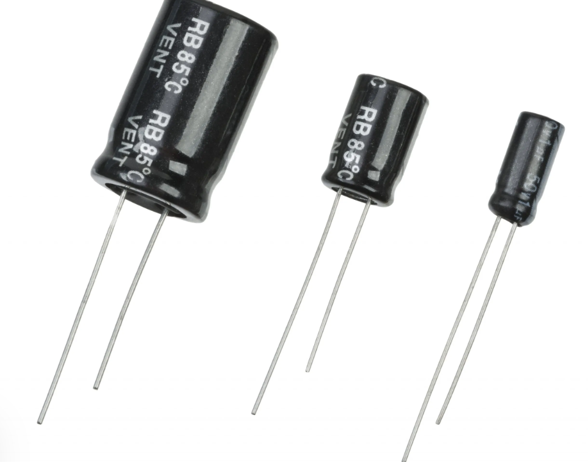Kondensator
En kondensator er en elektrisk komponent som kan lagre elektrisk ladning og frigjøre den når den er tilkoblet en krets. Kondensatorer brukes til filtrering, avstemming, timing og mange andre applikasjoner i elektronikk og elektroteknikk. Kondensator er i produktet brukt i kretsene for ac-måling og induktans-måling.
Spole
En spole er en elektrisk komponent som består av en ledning som er viklet rundt en sylinderformet eller annen form for kjerne. Spoler brukes ofte i kretser til å lagre energi, filtrere signaler, endre impedans og produsere elektromagnetiske felt. Spole er heller ikke brukt under utvikling av produktet men bare til testing av måling av induktans. 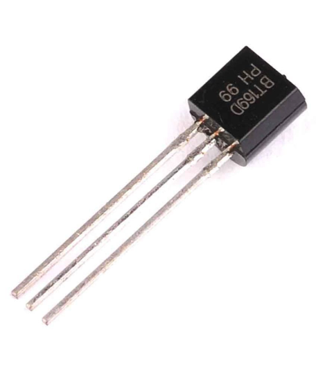Tyristor
En tyristor fungerer som en bryter eller en kraftkontrollenhet i elektroniske kretser. Den kan fungere som en enveis strømbryter og kan tåle høye strøm- og spenningsnivåer. Tyristoren består av fire lag av halvledermateriale og kan slås på ved å sende en positiv puls til den tredje elektroden, eller gate. Tyristoren brukes vanligvis i AC- og DC-kraftkretser, dimmerkontroller, belysningsutstyr, motorstyring og likerettere.Tyristoren som er brukt på måleapperatet er av typen bt160D og benyttes for å sperre retningen inn til å måling av dc spenning. Denne blir styrt av en impulsbryter som når blir trykket inn aktiverer gaten på tyristoren. 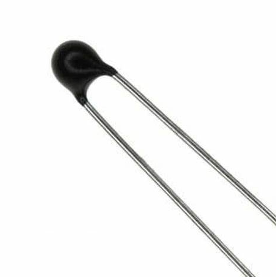Termistor
En termistor er en type temperatursensor som endrer motstanden når temperaturen endres. Den består av en keramisk eller polymerisk halvleder som er dopet for å ha en høyere resistivitet enn vanlige ledere. Når temperaturen øker, reduseres resistansen i termistoren, og når temperaturen synker, øker resistansen. Dette gjør termistoren til en effektiv sensor for å måle temperaturen i ulike applikasjoner, som for eksempel i hvitevarer, biler og medisinsk utstyr. Termistorer kan være negativ temperaturkoeffisient (NTC) eller positiv temperaturkoeffisient (PTC), avhengig av hvordan resistansen endrer seg med temperaturen. I apperatet er det brukt en termistor av typen NTC og denne er brukt til å måle innside temperaturen på slik at dette kan vises på skjermen dersom det skulle bli for varmt. 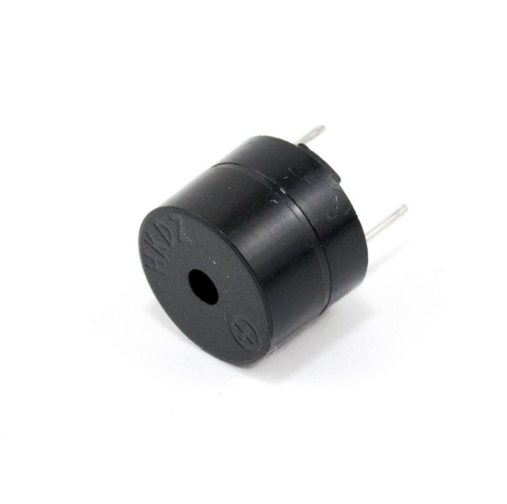Piezoelektrisk passiv buzzer
Piezoelektrisk passiv buzzer er en type buzzer som bruker en piezoelektrisk keramisk plate til å produsere lyd når den utsettes for elektrisk spenning. Den er ofte brukt i elektroniske kretser som enkel varsling, alarmer eller lydsignaler. Buzzeren er brukt til å lage lyd når apperatet skal måle kontakt. 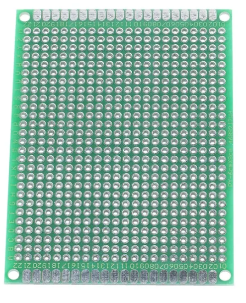Kretskort
Kretskort, også kjent som PCB (Printed Circuit Board), er en flat plate av isolerende materiale som har kobberbaner og komponenter montert på overflaten. Kretskort brukes til å koble elektroniske komponenter sammen og lage komplekse kretser i elektroniske apparater. I måleapperatet er det brukt kretskort for sammensetting av kretsene ved bruk av lodding. 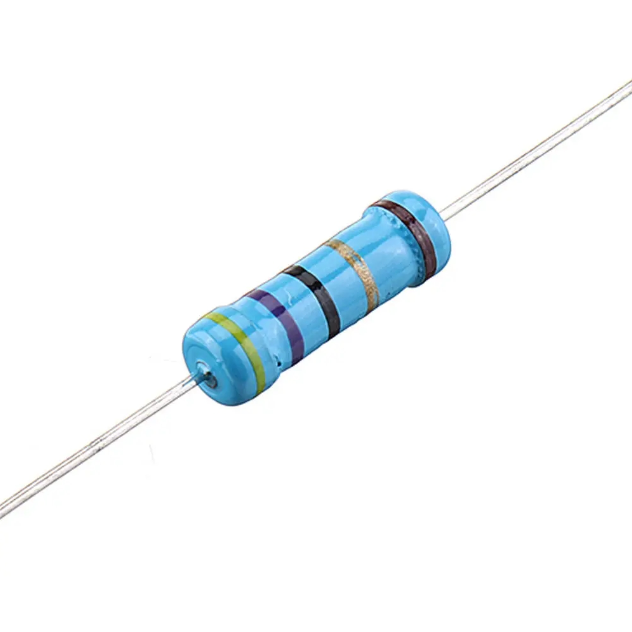Resistor
En resistor er en elektrisk komponent som brukes til å begrense strømmen i en krets. Den har en spesifikk elektrisk motstand som måles i ohm. Resistoren kan være laget av forskjellige materialer, inkludert karbonfilm, metallfilm og keramikk. Motstanden til en resistor avhenger av dens fysiske egenskaper, inkludert lengde, bredde og tykkelse. Resistorene brukes i en rekke applikasjoner, inkludert kretser for belysning, motorstyring og datamaskiner. Resistor er brukt på en rekke av de forskjellige kretsene i måleapperatet, hovedsaklig som spenningsdelere eller steder hvor mengden spenning måtte reduseres. 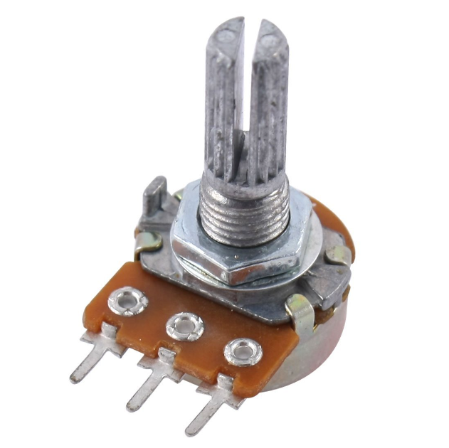Potensiometer
Potensiometer er en variabel motstand som brukes til å justere strøm eller spenning i en krets ved å endre motstanden. Potensiometere kan være lineære eller logaritmiske og finnes i ulike størrelser og typer, inkludert roterende, skyve- og trimpotensiometere. Potensiometeret er i måleapperatet brukt til styring av hvilken måling apperatet skal ta for seg. 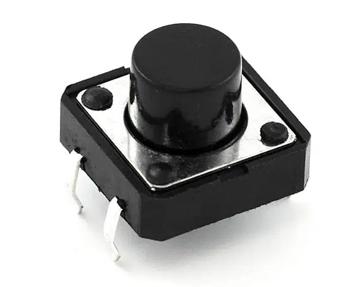Impulsbryter
En impulsbryter er en bryter som aktiveres når den trykkes ned og slippes. Impulsbrytere brukes ofte i elektriske kretser for å gi midlertidige eller momentane signaler til systemer eller enheter, for eksempel å starte en motor eller åpne en dør. Impulsbrytere kan ha forskjellige utforminger og størrelser, og kan være normalt åpne eller normalt lukkede avhengig av bruksområdet. De er vanlige i både industrielle og forbrukerapplikasjoner, og finnes i alt fra fjernkontroller til industrielle styringspaneler. Det er brukt en impulsbryter i apperatet, denne for å kunne akivere gaten på tyristoren når dc spenning skal måles.
Målepinner
Målepinner, også kjent som testprober, er små metallstenger med en spiss ende som brukes til å måle elektriske egenskaper i en krets. De kan kobles til et multimeter eller annet måleinstrument for å måle spenning, strøm eller motstand. Målepinner kan ha isolerte eller ikke-isolerte håndtak og kan være utstyrt med ulike typer sonder, for eksempel krok, spiss eller krokodilleklemme. Målepinner er vanlige verktøy i elektroindustrien og brukes ofte i feilsøking og reparasjon av elektriske systemer og apparater. Til apperatet er det lagt ved to stykk målepinner som skal benyttes under måling av de forskjellige innstillingene. 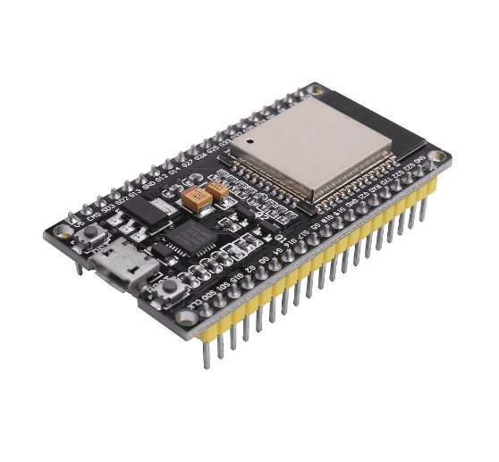
ESP-32
ESP32 er en system-on-chip (SoC) som kombinerer en 32-biters mikrokontroller med Wi-Fi og Bluetooth-tilkobling. ESP32 er vanligvis brukt i IoT-prosjekter, og kan programmeres med Arduino IDE eller MicroPython. I apperatet er denne chipen brukt for å innhente koden og sende ut/motta signaler for å kunne gi ut korrekte målinger. 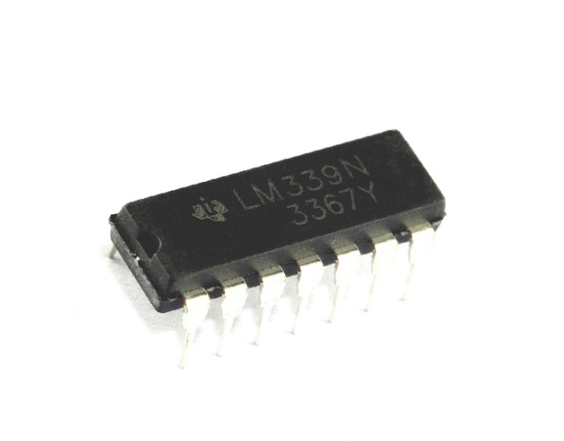
Opamp-lm339
Opamp LM339 er en fire-kanals komparatorkrets som brukes til å sammenligne to analoge signaler. Kretsen kan kobles direkte til en mikrokontroller eller annen logisk krets. LM339 har også lavt strømforbruk og kan operere over et bredt temperaturområde, som gjør den nyttig i applikasjoner med begrensninger på strøm og temperatur. Opamp-lm339 er i apperatet brukt til funksjonen for å måle induktans. 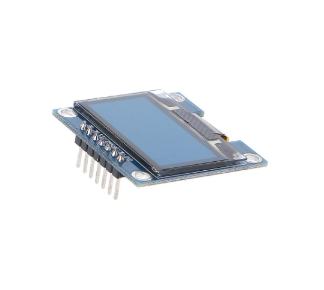
OLED
En OLED-skjerm med 64x128 piksler er energieffektiv og har høy kontrast og bred synsvinkel. Den viser enkle grafiske elementer og tekster, og er ideell for å vise sensorverdier, temperaturer eller klokkeslett. Skjermen kan kobles til en mikrokontroller med et OLED-skjerm bibliotek og litt programmeringskunnskap. For display av verdier er det brukt en 64x128px oled skjerm. 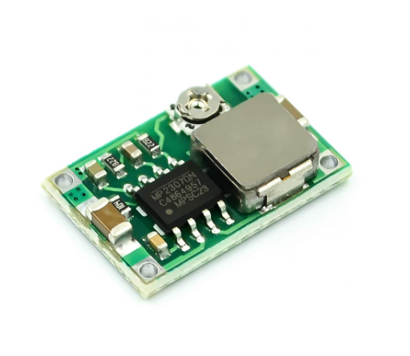
Buck converter
En buck converter 360 er en type DC-DC konverter som brukes til å senke spenningen fra en høyere til en lavere verdi. Den fungerer ved å slå av og på en seriebryter raskt, og dermed regulere strømmen som går gjennom spolen i kretsen. Dette gjør det mulig å få en stabil og effektiv spenning som kan brukes til å drive ulike elektroniske enheter. Buck convertere 360 er spesielt nyttige i applikasjoner som krever en høyere effektivitet og mindre varmeutvikling enn tradisjonelle buck convertere. Buck converteren er i apperatet brukt til å konvertere 9volt inngangspenningen fra batteritilkoblingen ned til 3,3volt.
Strømbryter
En strømbryter brukes til å slå av eller på elektroniske enheter som datamaskiner, TV-er, lys, og lignende. Når knappen er på, gir den strøm til enheten, og når den er av, bryter den strømforsyningen. Denne enkle funksjonen lar brukere enkelt kontrollere når enhetene er i bruk og når de ikke er det, noe som sparer strøm og øker levetiden til enheten. I apperatet er den brukt til akkurat dette, altså å styre når apperatet skal være på, eller avslått.
ASC712
ASC712 er en strømsensor som kan måle både AC- og DC-strøm opp til 30A. Sensoren gir ut en analog spenning som er proporsjonal med den målte strømmen, og kan brukes i et bredt spekter av applikasjoner, for eksempel overvåking av strømforbruket i en bygning eller styring av en motor. Den har en høy nøyaktighet og lavt strømforbruk, og kan enkelt integreres med mikrokontrollere og andre elektroniske kretser. I apperatet er denne brukt til måling av strøm og effekt.
Led-diode
En LED-diode, eller Light Emitting Diode, er en halvlederbasert komponent som konverterer elektrisk energi til lys. LED-er er effektive og har en lang levetid, og brukes i et bredt spekter av applikasjoner, inkludert belysning, skjermer og signalisering. LED-er finnes i ulike størrelser og farger, og kan enkelt styres av mikrokontrollere og andre kretser. I apperatet er denne brukt til å vise at apperatet er skrudd på.
Cat-6
Denne kabelen er brukt til tilkobling fra kretsbrettet til alt som kobles på casingen av apperatet. Dette grunnet lite spenningstap og god bøylighet.